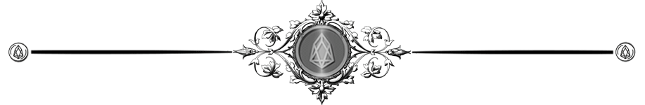

Compliance Is an Evidence Problem
TD Bank had the largest compliance army in North America and still let 70,000 alerts rot for six years. It didn’t fail from laziness. It failed because of twenty years of buying the wrong thing. The fix, one boring 35-year-old primitive.


“When a measure becomes a target, it ceases to be a good measure.”
— Marilyn Strathern (Goodhart’s Law)
And the Hash Everyone's Selling You Is Worthless
So is the most of what follows…
In 2024, TD Bank wrote American regulators a cheque for roughly US$3 billion. The stated reason: it had quietly stopped watching 92% of the money flowing through it, and some 70,000 suspicious-activity alerts had been stacking up unread since 2018. The number on the cheque is not the interesting part. Where the failure happened is. This was not a fly-by-night operation cutting corners; it was one of the biggest, best-staffed compliance machines in North American banking. Thousands of trained people, every system money can buy, and when a regulator finally asked it to show its work, it had nothing it could stand behind.
So set aside the idea that TD was careless. The people worked. The software ran. What the whole apparatus produced was paperwork that claimed things. And we all know that a claim is not proof. That distinction is the entire essay, so hold onto it.
The story everyone believes
Ask the industry what's broken and you'll get the answer it has given for twenty years: not enough hands, too many rules, too much manual grind. Every remedy points the same direction with adding officers, adding governance software, adding workflow automation. Tidy theory. We also happen to have tested it, at full scale, for two decades, and the invoice is itemized.
Somewhere around the turn of the century, "compliance officer" became one of the fastest-growing jobs in America, the ranks roughly tripling to north of 400,000 people, much better than US$40 billion in payroll before a consultant bills an hour. The rulebook grew to keep pace: Dodd–Frank alone packed more restrictions into Title 12 of the federal code between 2010 and 2014 than the entire title held in 1980. If staffing and spending fixed compliance, the results would be improving. The TD settlement is what improvement apparently looks like.
Which raises a question the conference circuit prefers to skip: what is it that 400,000 diligent people, by the very nature of the job, cannot manufacture?
Watch one of them work and you'll see it. An analyst chasing a suspicious case bounces across half a dozen disconnected systems (core banking, the KYC database, sanctions lists, the document graveyard, the internal policy wiki) and at the end she writes a summary of what she saw. That summary is her account of the evidence. It isn't the evidence. Three years later, when an examiner reopens the file, the bank cannot independently show what data existed at the time, who actually looked at it, or whether anything has been edited since. The audit trail records human say-so. You are being asked to trust the word of the one party with every reason to shade it.
Now strip the costume off any regulation you like (FDA Part 11, Sarbanes–Oxley, MiFID II, the discovery rules) and the same skeleton is underneath. Each of them, stripped down, asks for one thing: prove this existed at this moment, and prove no one has altered it since.
Pharma went so far as to codify it. Its data-integrity standard, ALCOA+, is a list of adjectives a record has to earn—attributable, contemporaneous, original, enduring, and so on down the line. Read them and you'll notice almost every one is a fussier way of saying this existed, then, untouched. All but one. Accurate. Whether the thing is actually true. Keep that exception in view, because the math I'm about to praise cannot lay a finger on it.
Here is the embarrassing part. We have been able to do the rest since before most of those 400,000 officers were hired. Haber and Stornetta described cryptographic timestamping in 1991. The standard for deploying it has existed since RFC 3161 in 2001. Europe has formally recognized qualified electronic timestamps under eIDAS for over a decade. The mechanism is mature, standardized, and so cheap that stamping a record costs essentially nothing.
I'm not speaking hypothetically. I built a working version of this years ago out of US$75 cattle tags while better-funded people were still writing fifty-page papers debating whether it could be done. Being right too early feels exactly like being wrong. Until it doesn't.
Where the pitch usually starts lying
This is the point where most people selling "blockchain for compliance" go quiet about the catch, and where I'd be doing the same if I stopped the sentence here.
A timestamp is a far smaller instrument than its salesmen imply. Hand it a document and it will testify to precisely two facts: the file existed by a given second, and the copy you hold now is identical to that one, byte for byte. That's the whole deposition. It has no opinion on whether the document is true, whole, or even the document that matters.
Which means I can compose a flat lie, stamp it, and walk away holding a forgery with an airtight alibi. The stamp never stops me lying about what happened; it only stops me lying about when I said it. Cryptographers call the leftover hole the oracle problem, and it is the whole distance between a real product and a con.
That single limit cleaves every compliance obligation into two piles, and getting the cut right is the only thing that separates a thesis from a sales deck.
In the first pile, the date is the verdict. Who can prove they conceived an invention first? Was a document locked down the instant a litigation hold attached? Was a filing made before the statutory clock ran out? Was a record written when it claims to have been, or backdated last Tuesday? For these, proving existence-at-a-time and integrity doesn't merely help the case, it more or less is the case. Patent priority, trade-secret possession, filing deadlines, backdating: a timestamp settles them about as cleanly as evidence ever settles anything.
The second pile is where the timestamp goes to die. Was the transaction review any good? Did the control actually fire? Was the material delivered? Was the diagnosis right? A stamp can prove a record of the act existed and the duty is about the act, not the record. TD is the cautionary tale: stamping 70,000 unread alerts would have bought the bank flawless, court-ready proof that 70,000 alerts went unread. The honest market lives almost entirely in the first pile, plus the thin sliver of the second where the fight truly reduces to "did this exact record exist, unaltered, at time T."
The hash is a commodity
Second uncomfortable truth, again at my own expense: the cryptography is a commodity. It's mature, standardized, and close to free, which is the textbook setup for a great primitive and a terrible business. The value gets competed straight to zero, or some incumbent platform swallows it by adding a column.
So why isn't the story over? One precedent answers it: the e-signature. Also a decades-old, near-free piece of cryptography. Somebody still built a multi-billion-dollar company on top of it. It's not on the math, which anyone could copy, but on the three layers stacked above it. Capture: wiring the signature into the workflow so the record is born verifiable instead of reconstructed under oath. Acceptance: the legal and procedural scaffolding that turned the output into the thing a court and a counterparty wave through without argument. And the network position that made everyone else build around it.
Sell the stamp itself and you'll capture roughly none of that headline trillion, because your stamp is free and so is your competitor's. The money, what slice of the trillion is even real, sits in those same two unglamorous places: capturing the record cleanly at the instant it's created, and manufacturing the legal trust that lets a tribunal accept it years later without a brawl. Anyone quoting you US$1.3 trillion as a market is handing you the size of the problem and pricing it as the size of the prize. Those are not the same number, and blurring them is precisely the move I'm refusing to make.
Why this finally became unavoidable
For thirty years the primitive sat on the shelf for a reason that had nothing to do with the technology. Human audit trails were good enough, because the judgments lived inside humans you could re-interview. An examiner could call the analyst back, re-read her notes, and rebuild the decision after the fact. The evidence layer was a solution waiting for a problem.
The problem just arrived, and it isn't human. Frontier language models now reason about regulatory text at roughly the level of the people they're replacing, and firms are quietly handing them the work while triaging transactions, reviewing batch records, and hunting prior art. But an agent's conclusion is a function of its weights, its prompt, whatever it retrieved at inference, the tool outputs it happened to see, its sampling state, and the snapshot of data it was looking at. Every one of those drifts. Run the query again next month and the answer changes. The agent's state of mind at the moment it acted cannot be recovered, that is, unless someone froze it at that moment. And it all runs at a volume that breaks the old spot-check audit. You cannot hand-review a million decisions.
Freezing that record doesn't prove the agent was right; a system that claimed to would be exposed the first time a beautifully anchored decision turned out to be wrong. It proves something narrower and checkable: what the agent saw, what it concluded, and when—nailed down at the instant of action and provably untouched since. That narrowness isn't a weakness to apologize for. It's the exact reason a court will admit the thing.
The regulators are circling, though not as helpfully as the brochures suggest. The EU AI Act now orders high-risk systems to keep automatic logs for at least six months. What it conspicuously does not order is that those logs be immutable or independently anchored—ordinary access-controlled logging clears the bar. So the same gap I've been describing crawls right back inside the logs the law just forced into existence: machine decisions, retained in bulk, still editable, still held by the party with the motive to edit them. That's an opening, not a mandate.
The part where I admit my stake
I run ARC Knowware. We build immutable timestamp infrastructure for regulated firms. I have an obvious financial reason to want you believing every word above and which is exactly why I've spent half this piece telling you what the technology can't do. The stamp proves integrity, never truth. It decides the date-is-the-verdict cases and is useless on its own everywhere else. The mechanism is a commodity, and a vendor selling the mechanism deserves to earn nothing on it. The defensible business is capture and acceptance, in a handful of verticals where the operative fact is a date, and nowhere near the trillion.
For twenty years the industry has treated compliance as a labour shortage and answered by automating the busywork while leaving the one real fault line alone: it produces assertions, not independent proof of what existed and when. The missing piece was never another thousand officers. It was never the hash either. It's the clean, independent capture of a record at the moment it's born and shipped first into the cases where the calendar is the whole argument.
Everyone else is still writing the white paper. I've got the cow tags.

Don't miss the weekly roundup of articles and videos from the week in the form of these Pearls of Wisdom. Click to listen in and learn about tomorrow, today.

Sign up now to read the post and get access to the full library of posts for subscribers only.

About the Author
Khayyam Wakil is a researcher at The ARC Institute of Knowware and founder of CacheCow Systems Inc., an Agriculture Intelligence suite, which is either a livestock intelligence company or the only EMP-hardened food security infrastructure being built without anyone asking for it, depending on when you're reading this. His work spans epistemology, institutional behavior, and the mechanics of knowledge correction, the gap between what civilizations know and what they build.
He is the author of the forthcoming Knowware: Systems of Intelligence — The Third Pillar of Coordination and The Constitutional Sieve Research Programme. Token Wisdom is where he writes while the work is still warm. He remains professionally uninterested in whether this essay makes you comfortable.
References & Sources
In order of appearance.
- U.S. Department of Justice (2024), "TD Bank pleads guilty to Bank Secrecy Act and money laundering conspiracy violations in $1.8B resolution." DOJ press release. — The guilty plea behind the opening. Note: the DOJ resolution (~$1.8B) and the FinCEN penalty (~$1.3B, below) circulate together; the essay's rounded "~US$3 billion" is the aggregate, not a single line item. Worth stating plainly if a fact-checker comes calling.
- Financial Crimes Enforcement Network (2024), "FinCEN assesses record $1.3 billion penalty against TD Bank." FinCEN news release. — Source for the 92%-of-transactions-unmonitored finding and the ~70,000 unreviewed alerts dating to 2018.
- U.S. Bureau of Labor Statistics (2024), "Compliance Officers," Occupational Outlook Handbook. — The ~200% growth (2000–2023), the 400,000+ headcount, and the US$40B+ labour figure.
- Patrick A. McLaughlin & Oliver Sherouse (2015), "The Dodd–Frank Wall Street Reform and Consumer Protection Act May Be the Biggest Law Ever," Mercatus Center (RegData). — The Title 12 restriction-count comparison: more added 2010–2014 than the entire title held in 1980.
- U.S. Food and Drug Administration (1997), "21 CFR Part 11: Electronic Records; Electronic Signatures." — First of the "strip the costume" regimes; the pharma electronic-records rule.
- United States Congress (2002), Sarbanes–Oxley Act of 2002, Pub. L. 107-204, §§302, 404. — The financial-reporting audit-trail regime.
- European Parliament & Council (2014b), Directive 2014/65/EU on markets in financial instruments (MiFID II), OJ L 173. — Cited for timestamped trade-communication records.
- Committee on Rules of Practice and Procedure (2015), Federal Rules of Civil Procedure, rr. 26, 34, 37 (e-discovery amendments), Judicial Conference of the United States. — The "discovery rules"; also underwrites the litigation-hold example in the Class A pile.
- Medicines and Healthcare products Regulatory Agency (2018), "'GxP' Data Integrity Guidance and Definitions," MHRA (UK). — Source for ALCOA+. The essay's spear — that every ALCOA+ adjective except "Accurate" collapses into existence-and-integrity — is an argument about this standard, not a claim the standard makes.
- Stuart Haber & W. Scott Stornetta (1991), "How to Time-Stamp a Digital Document," Journal of Cryptology 3(2):99–111. — The 1991 origin of cryptographic timestamping; basis for the "before most compliance officers were hired" line.
- Internet Engineering Task Force (2001), "Internet X.509 Public Key Infrastructure Time-Stamp Protocol (TSP)," RFC 3161. — The standard that made trusted timestamping deployable; basis for "since 2001."
- European Parliament & Council (2014a), Regulation (EU) No 910/2014 (eIDAS), OJ L 257. — EU recognition of qualified electronic timestamps. Recognises time and integrity (Art. 41 presumption); pointedly not the truth of contents — the distinction the essay turns on.
- Khayyam Wakil, "Architecture Over Scale," Token Wisdom W49 (ACL.86). — Self-reference / cross-reference, not an external source. The US$75 cattle-tag build and the "being right too early" callback.
- United States Congress (2011), Leahy–Smith America Invents Act, Pub. L. 112-29, 35 U.S.C. §§102–103. — The patent-priority / earlier-conception point in the Class A examples.
- Khayyam Wakil (2026), "Compliance Is an Evidence Problem," ARC Knowware Working Paper (preprint, 30 May 2026). — Source of the US$1.3 trillion figure. This is the author's own order-of-magnitude estimate of compliance-and-litigation reach (§6 / Fig. 6), not a third-party market statistic. Attribute as such; the essay's own argument forbids dressing reach up as revenue.
- Neel Guha, Julian Nyarko, Daniel E. Ho, Christopher Ré, et al. (2023), "LegalBench: A Collaboratively Built Benchmark for Measuring Legal Reasoning in Large Language Models," NeurIPS. — Empirical basis for "frontier models reason on regulatory text at roughly human level."
- Andreessen Horowitz (2025), "Everything, Everywhere Is Compliance," a16z newsletter. — Secondary support for the delegation-of-compliance-work trend. A venture-side read; weight accordingly.
- European Parliament & Council (2024), Regulation (EU) 2024/1689 (Artificial Intelligence Act), OJ L series. — The ≥6-month logging requirement for high-risk systems — and, more to the point, what it does not require: immutability or independent anchoring (Art. 12 is satisfied by ordinary access-controlled logging).
#regtech #compliance #AML #financialcrime #dataintegrity #AIcompliance #financialregulation #riskmanagement #fintech #blockchain #timestamping #longread | 🧠⚡ | #tokenwisdom #thelessyouknow 🌈✨